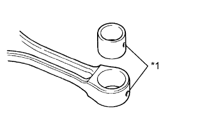

БЛОК ЦИЛИНДРОВ > ЗАМЕНА |
| 1. ЗАМЕНИТЕ МАЛУЮ ОКОНЕЧНУЮ ВТУЛКУ ШАТУНА |
С помощью SST и пресса выпрессуйте втулку.
|  |
Совместите отверстия для заливки масла в новой втулке и шатуне.
| *1 | Смазочное отверстие |
С помощью SST и пресса запрессуйте втулку.
С помощью устройства для шлифовки отверстий малого диаметра обработайте втулку, чтобы получить номинальный требуемый зазор между втулкой и поршневым пальцем.
Проверьте посадку поршневого пальца при обычной комнатной температуре.
Покройте поршневой палец слоем моторного масла и вставьте в шатун, нажав на него большим пальцем.
| 2. ЗАМЕНИТЕ ПРОБКУ |
| *a | Передняя сторона | *b | Со стороны впуска |
| *c | Задняя сторона | *d | Со стороны выпуска |
Нанесите на новые пробки герметик.
С помощью SST запрессуйте 8 пробок A и C.
С помощью SST запрессуйте пробку B.
С помощью SST запрессуйте 3 пробки D.
| 3. ЗАМЕНИТЕ СТОПОРНЫЙ ШТИФТ |
Пластмассовым молотком запрессуйте новые стопорные штифты в блок цилиндров.
| Параметр / Устройство | Широкий | Выступ |
| Штифт A | 10 мм (0,394 дюйма) | 13 мм (0,512 дюйма) |
| Штифт B | 6,0 мм (0,236 дюйма) | 5,5 мм (0,217 дюйма) |
| *1 | Выступ |
| *a | Задняя сторона |
| 4. ЗАМЕНИТЕ СОЕДИНИТЕЛЬНОЕ КОЛЬЦО |
| *1 | Высота | *2 | Ширина |
| *3 | Выступ | - | - |
| *a | Передняя сторона | *b | Нижняя сторона |
| *c | Верхняя сторона | - | - |
Пластмассовым молотком запрессуйте новые соединительные кольца в блок цилиндров.
| Параметр / Устройство | Высота | Ширина | Выступ |
| Штифт A | 9,0 мм (0,354 дюйма) | 11 мм (0,433 дюйма) | от 3,5 до 4,5 мм (от 0,138 до 0,177 дюйма) |
| Штифт B | 14 мм (0,511 дюйма) | 15 мм (0,591 дюйма) | 7,5 - 9,5 мм (0,295 - 0,374 дюйма) |
| Штифт C | 20 мм (0,787 дюйма) | 14 мм (0,511 дюйма) | 7,0 - 9,0 мм (0,276 - 0,354 дюйма) |